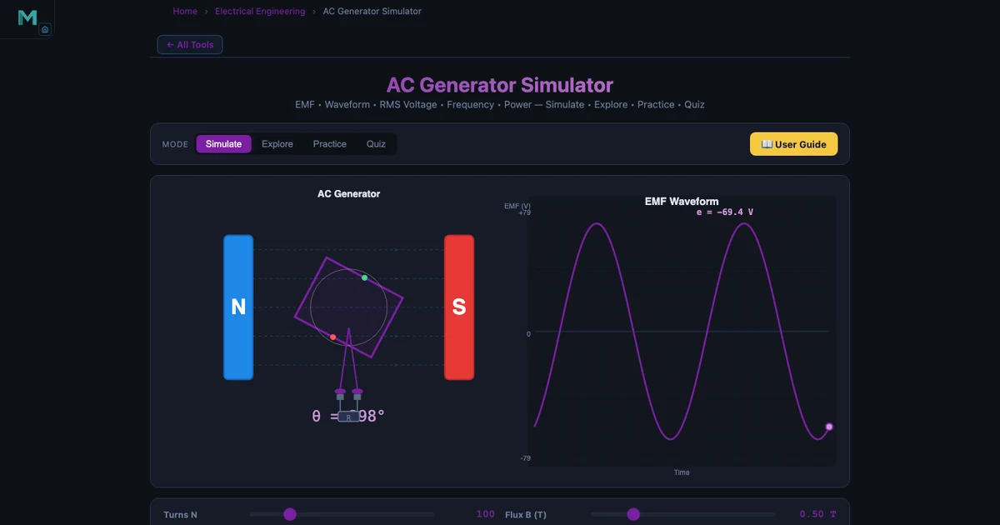
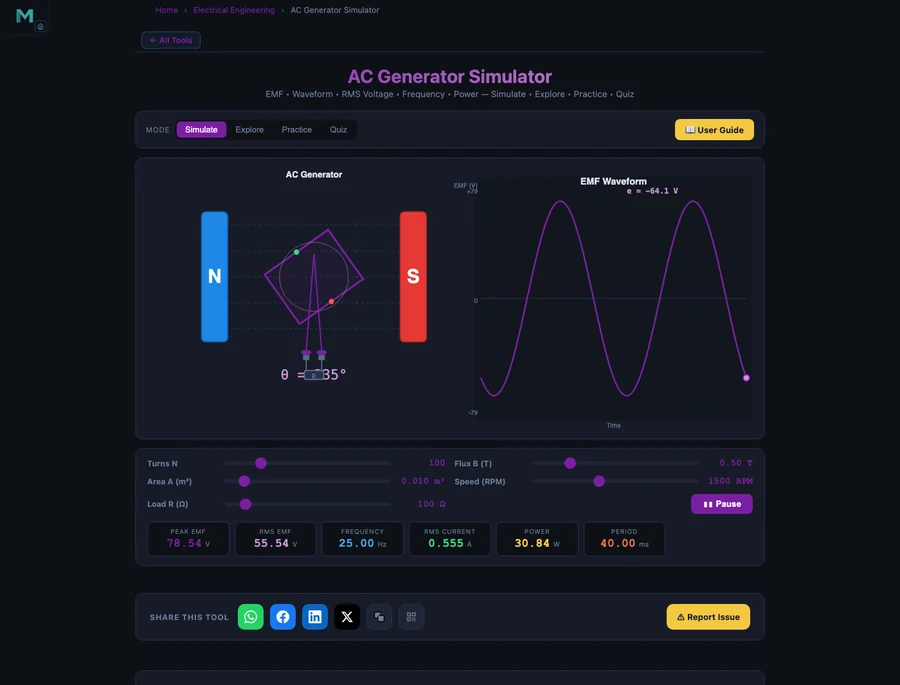

Online Teaching Challenges in Electrical Engineering — Overcome With Free Virtual Circuit Simulators

- The two hardest online teaching challenges are the invisibility of electricity (voltage, current, and magnetic flux cannot be seen) and the loss of hands-on circuit building; free virtual simulators restore the interactive feedback that makes the theory tangible.
- An AC generator simulator teaches Faraday's law by computing the EMF equation E₀ = NBAω — for a 200-turn coil with B = 0.5 T, A = 0.02 m², at 1500 RPM, ω = 157.08 rad/s gives E₀ = 314.16 V.
- RMS voltage follows E_rms = E₀ / √2, so a 325 V peak yields 229.81 V ≈ 230 V mains, while a 4-pole generator at 1500 RPM produces f = Pn/120 = 50 Hz.
Electrical engineering has a problem that mechanical engineering does not share: electricity is completely invisible. A beam deflects visibly. A gear rotates. But voltage, current, and magnetic flux exist only as instrument readings and mathematical abstractions. When a student in a physical lab builds their first circuit, connects a multimeter, and watches the voltage reading respond to a changed resistor, something clicks. That moment is difficult to reproduce online. But it is not impossible.
The online teaching challenges in electrical engineering are real, and every instructor who has delivered circuits or electromagnetism remotely has encountered most of them. This article describes the five that matter most — and the free virtual tools that address each one directly.
When the Lab Bench is Not Available
Think about what a first-year electrical engineering student does in a normal lab session. They pick up a resistor, read the colour code, connect it into a breadboard, clip probes across it, and read 6.8 V from a multimeter when 9 V is applied. They calculate R = V/I themselves and match it to what they measure. The formula is not abstract. It is a number their hands produced.
Online, they have a formula and a worked example. It is not the same thing. The question is how close you can get.
Five Challenges Electrical Engineering Instructors Face Online
Challenge 1 — Electricity is invisible. You can point at a truss and say “this member is in tension.” You cannot point at a wire and say “1.5 A is flowing here.” Without colour-coded simulations or live meters, students have to take the abstraction entirely on faith.
Challenge 2 — No physical circuit building. Breadboards, resistors, capacitors, DMMs — none of this translates online. Students who have never soldered a joint or measured continuity have a fragile understanding of what “in series” and “in parallel” actually mean physically.
Challenge 3 — Electromagnetic induction is hard to visualise. Faraday’s law, Lenz’s law, flux linkage — these concepts involve fields that pass through areas and change with time. Drawing them on a whiteboard produces only static pictures. Students who have not watched a real coil turn inside a magnetic field are guessing at what the equations represent.
Challenge 4 — AC waveforms feel abstract. The distinction between peak, RMS, average, and instantaneous values matters enormously in practice. Without oscilloscope experience, students learn the formulas but struggle to connect \(E_{\text{rms}} = E_0 / \sqrt{2}\) to the 230 V that comes out of a wall socket.
Challenge 5 — Faults and troubleshooting cannot be taught remotely. “What happens if this component fails?” is the core of electrical engineering practice. Simulating that fault, watching the circuit response, and learning to diagnose it — this is lost completely without either a physical lab or a simulation environment.
How the AC Generator Simulator Makes Electromagnetic Theory Visible
The AC Generator Simulator covers 16 concepts across three categories: fundamentals (EMF equation, Faraday’s law, Lenz’s law, RMS, frequency, angular velocity), components (stator, rotor, slip rings, commutator, brushes, armature, field winding), and types (single-phase, three-phase, synchronous, induction). Each concept includes an animated diagram, the formula, a description, and a worked example with step-by-step solution.
The EMF equation is the core of alternator theory. For a coil with N = 200 turns, flux density B = 0.5 T, coil area A = 0.02 m², rotating at n = 1500 RPM:
\[\omega = \dfrac{2\pi n}{60} = \dfrac{2\pi \times 1500}{60} = 157.08 \text{ rad/s}\]
\[E_0 = N \times B \times A \times \omega = 200 \times 0.5 \times 0.02 \times 157.08 = 314.16 \text{ V}\]
The simulator walks through this exact calculation. Students can see each variable labelled in the diagram before they see the number. That sequence — label, formula, substitution, answer — is how calculation problems should land, and it is much harder to deliver in a narrated video than in an interactive concept card.
The RMS concept connects theory to practice directly. A peak voltage of 325 V produces:
\[E_{\text{rms}} = \dfrac{E_0}{\sqrt{2}} = \dfrac{325}{1.4142} = 229.81 \text{ V} \approx 230 \text{ V (mains)}\]
When students see that the 230 V they use every day is not a peak value but an RMS value — and that the actual peak is 325 V — the abstract formula becomes a real-world connection.

Circuit Theory Without a Circuit Board — A Classroom Scenario
Here is a 25-minute online session structure that works for DC circuit analysis.
Warm-up (5 min). Open the Ohm’s Law Simulator. Ask students to find the resistance that produces exactly 2 A from a 12 V supply. They should get R = 6 Ω. Don’t explain Ohm’s law yet — let them explore first. Most students will click around and find it in under two minutes, which means they have already used the law before you define it.
Formula phase (8 min). Now introduce V = IR. Show series and parallel combinations. Ask: “Two 6 Ω resistors in series — what is the total resistance? What current flows from 12 V?” Then: “The same two resistors in parallel — what now?” Students answer from the simulator before you confirm. The series answer (12 Ω, 1 A) and the parallel answer (3 Ω, 4 A) are dramatically different, and seeing that difference builds understanding of why topology matters.
AC theory extension (12 min). Switch to the AC Generator Simulator. Cover the EMF equation for the 1500 RPM coil above. Then ask: “If this generator powers a 50 Ω resistive load, what RMS current flows?” Students apply I = V/R with the RMS voltage they just calculated. The answer (I = 229.81/50 = 4.60 A) connects AC theory directly to the DC circuit law they just used. The whole session is a single continuous chain: physical intuition → DC law → AC application.
For the Wheatstone bridge and more complex DC network analysis, the Ohm’s Law and DC Circuits guide covers bridge balance conditions and nodal analysis in detail.
Building Your Electrical Engineering Virtual Lab Routine
Use the concept-card sequence. The AC Generator Simulator’s 16 concept cards are already in pedagogical order. Do not skip around — cover EMF, then Faraday, then Lenz, then RMS, then frequency. Each card builds on the previous. One card per 8 minutes gives you a complete 2-hour session on AC generation theory.
Make invisible things visible first. Before you define current, ask students to adjust the supply voltage in the Ohm’s Law simulator and watch the ammeter reading change. Before you define flux, ask them to change the number of turns in the EMF equation and watch E⊂0; respond. Curiosity first, formula second.
Connect AC to DC at every opportunity. Students who are confident with Ohm’s law often freeze when frequency enters. Show that V = IR still applies with RMS values for purely resistive loads. That single bridge reduces the anxiety around AC by about half.
Assign a waveform interpretation task. Ask students to compute peak voltage from a given RMS and verify with the AC generator formula. Then ask: “For a 4-pole generator at 1500 RPM, what is the output frequency?”
\[f = \dfrac{P \times n}{120} = \dfrac{4 \times 1500}{120} = 50 \text{ Hz}\]
They verify it in the simulator. They now know where 50 Hz comes from. That is not a trivial piece of knowledge.
Try These Free Electrical Engineering Simulators
All tools below are free — no account, no download, runs in any browser.
Key Takeaways
- The core challenge in online electrical engineering teaching is the invisibility of the subject — virtual simulators restore the interactive feedback that makes abstract concepts tangible.
- The AC Generator Simulator covers all 16 key concepts of AC generation, including the EMF equation E⊂0; = NBAω and RMS value Erms = E⊂0;/√2, with animated diagrams and stepped worked examples.
- A 200-turn, 0.5 T coil of 0.02 m² at 1500 RPM produces E⊂0; = 314.16 V, Erms = 222.1 V — numbers students calculate from the formula and verify in the simulator.
- Connecting AC theory to DC circuits (V = IR with RMS values for resistive loads) reduces student anxiety and builds a unified understanding of electrical theory.
- The 4-pole, 1500 RPM generator produces exactly 50 Hz — a calculation from f = Pn/120 that students can verify in the simulator, anchoring abstract frequency theory to real power grid practice.
- The NHIT VisualLab electrical library — AC generator, Ohm’s law, Kirchhoff solver, Wheatstone bridge, RC circuit, RLC circuit — covers a full semester of electrical theory, all browser-based and free.
Frequently Asked Questions
What are the biggest online teaching challenges in electrical engineering?
The hardest challenges are the invisibility of electricity and the loss of physical circuit building. Voltage, current, and magnetic flux cannot be seen directly, so students who never built a real circuit can lose the thread completely. Free virtual simulators — AC generator, Ohm’s Law, and RC circuit tools — restore the interactive feedback that makes abstract electrical theory tangible.
How does the AC generator simulator help teach Faraday’s law online?
The AC Generator Simulator on NHIT VisualLab covers the EMF equation E⊂0; = NBAω, Faraday’s law, Lenz’s law, RMS values, frequency, and all six generator components with animated diagrams and worked examples. For a 200-turn coil with B = 0.5 T, A = 0.02 m², rotating at 1500 RPM, the simulator shows ω = 157.08 rad/s and E⊂0; = 314.16 V — numbers students can verify step by step against the formula.
Can students learn circuit theory effectively without building real circuits?
For the theoretical and analytical parts — Ohm’s law, Kirchhoff’s laws, series-parallel combinations, time constants — yes, virtual simulators provide everything needed. The Ohm’s Law simulator lets students build DC circuits and measure voltage, current, and power with live readouts. Wheatstone Bridge and RC Circuit simulators extend this to measurement and transient analysis. What is lost is the tactile skill of soldering and safe component handling, which still needs lab time.
What RMS voltage does a generator produce with a 325 V peak output?
For a sinusoidal waveform, E_rms = E⊂0; / √2 = 325 / 1.4142 = 229.81 V. This is the standard 230 V mains voltage used across most of the world, generated by alternators running at speeds matched to produce 50 Hz. The AC Generator Simulator demonstrates this calculation directly in its RMS Value concept, letting students verify the 0.7071 factor without memorising it.
How should I structure an online electrical engineering lab session?
Start with a quick exploration task — open the Ohm’s Law simulator and ask students to find the resistance that produces exactly 2 A from a 12 V supply before you explain anything. This gives them a concrete result to attach the formula to. Then move to the AC Generator for electromagnetism topics, using the concept cards to cover EMF, RMS, and frequency in sequence. End with a verification task where students submit a screenshot of a specific configuration plus their matching hand calculation.
Electrical engineering has always been the most abstract of the engineering disciplines for first-year students. Making it concrete online is harder than in a physical lab — but the gap is genuinely closeable, and you can close most of it without buying a single piece of equipment.
Start with the AC Generator Simulator for electromagnetism topics and the Ohm’s Law tool for circuit theory, and build your session around exploration before explanation.